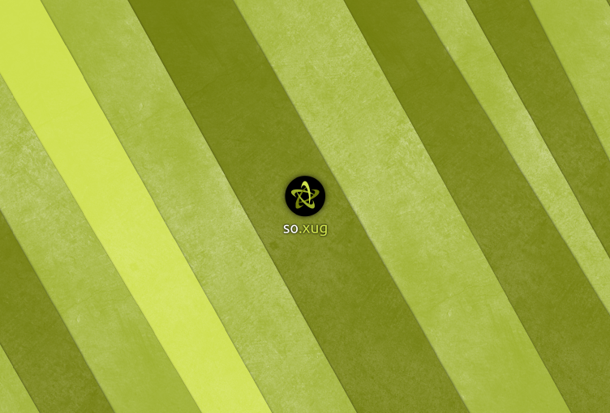

<div class="main wide">
    <div class="text background-gray">
        <h1 class="innertitle"><strong>so.xug</strong> <span class="normal">12.04</span></h1>
        <div>
            Unha adaptación de <strong>Ubuntu 12.04</strong> especialmente deseñada para cubrir as necesidades  do Sistema Universitario de Galicia. Cunha morea de software que o axudará nas tarefas do día a día. Vexamos agora algunhas desas novidosas ferramentas que  usariamos…
        </div>
    </div>

    
</div>
